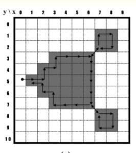
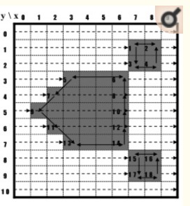

Segmentation is the process of partitioning an image into multiple parts.image segmentation is used in object classification, identification.
Object detection just finds the object and gives the locality of that object, but this is not very useful when shape is
required for the classification or identification, so we use segmentation which gives granular understanding the object.
So we are performing image segmentation using contours detection.
A contour is a closed curve joining all the continuous points having some colour or intensity, they represent the shapes
of objects found in an image.
Contour detection is a major issue in image processing. This problem is strongly related to the detection of the
connected contours separating these parts. It is quite easy to detect edges using local image analysis techniques, but
the detection of continuous contours is more complicated and needs a global analysis of the image.
The conventional contour algorithms can typically be categorized into three types as follows:
1.pixel following,
The pixel-following method traces contour pixels in a predefined manner and then saves their coordinates in memory according to the trace order

pixel following method has 4 different algorithms: square tracing ,moore neighbor tracing,Radial sweep,theo pavlidis algorithm
2.vertex following
The vertex-following method traces the vertices of the contour pixels that are located on the edges between the contour pixels and the background pixels
3.run-data-based following.
The run-data-based following method, which involves the edge-point tracing of run data , uses run data in pairs consisting of an object’s left and right edges, which are obtained using horizontal scan lines from left to right on an image. additive operation is performed for calculating the relationship between adjacent run-data horizontally.

This method is slower compared to other 2 methods ,but it is more accurate ,also this is the most data efficient compared to vertex and pixel following method.
opencv has method called "findcontours" ,it is based on run data flow algorithm and also it uses moore neighbor tracing algorithm to find the boundary
Brief Study on the conventional contour tracing algorithms is completed.
Implemented segmentation using contours on simple threshold image and and on image whith edge detection performed and comparing results .
• when we try to find image contours from a non pre-processed binary image we find that there is lot of noise in the image whch hampers the resulting bounding contour but when we perform gaussian blur ,the noise is removed to produce a smoother bounding curve
• The image after performing edge detection gave better results than the image with simple thresholding.
• also using morphological transformation ,erode(min neighbor) we find that the some of the broken edges are conncected which further increases the accuracy of the tracing algorithm
•Result after simple threshold
• Result after canny edege detection
The code for the implemntation can be found here